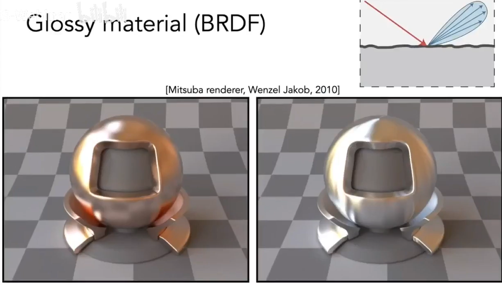

[图形]材质
What is Material in Computer Graphics
我们能看到物体有颜色，一定是有光到达了人的眼睛里。如果在某一点上有颜色，一定是这个点有光到达了眼睛。那为什么，有时候我们可以在空气中看到光的路径呢（比如丁达尔效应）？也就是说有光线在空气中被重新导向，这个叫做散射。
鱼肉看上去好像是透明的，但越往内部越不透明，光进去会散射成一大片。这种现象叫次表面散射
研究材质就是研究光线与物体如何作用。
我们也知道，渲染方程是严格数学推导出的，那它一定也描述了材质，就是BRDF。
所以，材质等于BRDF
Diffuse/Lambertian Material
如果一个物体表面是漫反射材质，那它就能把光均匀的发射到各个方向上。
现在假设，从任何方向上进来的光Radiance都是一样的（uniform），那反射的光也是uniform，根据能量守恒，如果这个点不发光，也不吸收光，那进来多少能量，就反射多少能量（能量是着色点周围很小的一块区域收到的能量，就是Irradiance），也就是进来多少Irradiance，出去多少Irradiance。也就是入射的Radiance和出射的Radiance是相等的。

没有自发光
入射$\omega_i$经过变换反射到$\omega_o$上去
因为假设的Radiance是常数，BRDF也是常数，提到前面，发现就是对半球上一个cos函数的积分，积出来是Π
最后BRDF就是$ f_r = \rho / \pi $，$\rho$是反射率，它可以是一个数，可以是RGB，还可以是光谱，它是个0到1之间的数，这样就可以引入不同颜色的BRDF

左边不用解释，右边是从上往下看，投影到平面上。球坐标系
Glossy Material

有点粗糙的镜面
Ideal reflective/refractive Material

Snell’s Law 斯涅尔折射定律


$$ \eta_isin\theta_i = \eta_t sin\theta_t $$
有了折射率就能算出$\theta_t$。很容易推出折射角余弦是：
$$ cos\theta_t = \sqrt[]{1-(\frac{\eta_i}{\eta_t})^2(1-cos^2\theta_i)}$$
根号内结果要是个实数，如果不是实数，也就是$\frac{\eta_i}{\eta_t}>1$的时候，折射没有发生。这个现象叫做全反射。
发生在从光从低密度介质到高密度介质传播的过程

Fresnel Reflection / Term 菲涅耳项

摄像机以不同视角去观察这本书，会发现，几乎垂直往下看，基本上看不到书桌反射书本，如果平行看书，会发现桌上反射的书特别明显。
有多少光被反射，和入射光是有关系的，入射光和法线的角度决定了有多少能量被反射


还有个例子：坐车的时候，车厢两边有玻璃窗，如果直接垂直着看身边的窗户，可以看到外面，但是如果看前几排窗户（斜着），只能看到车厢内部的反射。
古时候镜子用铜啊银啊，也是因为金属的菲涅尔项很稳定

这是菲涅尔项近似公式，拟合了导体和非导体的特点
Microfacet Material 微表面材质
Microfacet Theory 微表面模型

微表面模型认为，从远处看到的是材质、外观，从近处看是几何。每一个微表面都是镜面，都有法线

根据微表面法线分布情况的不同，就会形成不同的材质
Microfacet BRDF

$F(i,h)$是菲涅尔项（反射的能量）
$D(h)$是法线分布（任何一个给定方向上的值）。只有当法线方向和半程向量h方向完全一致时，才能把入射光反射到出射点
$G(i,o,h)$的意思是，表面上这些凹凸不平的，可能发生有些微表面把另一些遮挡了，那些被遮挡的不会产生反射。光线几乎和表面平行（Grazing Angle 掠射角度）进来时容易发生这种现象
Isotropic/Anisotropic

材质可以分为
- 各向同性：各个方向法线基本均匀
- 各向异性：水平或竖直方向法线具有明确分布

各向异性反映在BRDF上，就是如果在方位角上旋转，不满足旋转前的BRDF
例子中，左边两个球，左边的球是各向同性，右边的球是各向异性
Measuring BRDFs
BRDF可以测量

枚举所有可能，然后测

除非特殊说明，否则一律采用知识共享署名-相同方式共享 4.0 国际许可协议进行许可。